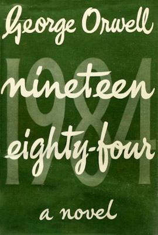
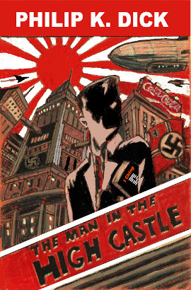

Ciencia ficción social
Son obras que exploran posibles escenarios para el futuro o pasado de la humanidad centrándose en diferentes tipos de sociedades. Hacen hincapié especialmente en las libertades individuales, la lucha de clases, la ética y los conflictos sociales.
-
Utopía
La Utopía toma su nombre de la obra homónima de Tomás Moro publicada en , aunque en realidad el no usaba este término con la acepción que le damos hoy en día. La primera acepción de la RAE para utopía es
Proyecto deseable, pero irrealizable
.`Es decir, son obras que nos presentan sociedades ideales, en las cuales todo sería perfecto. No son novelas sino ensayos describiendo dichas sociedades.

- Utopía
- Tomás Moro
-
Así, cuando miro esas repúblicas que hoy día florecen por todas partes, no veo en ellas - ¡Dios me perdone! - sino la conjura de los ricos para procurarse sus propias comodidades en nombre de la república. Imaginan e inventan toda suerte de artificios para conservar, sin miedo a perderlas, todas las cosas de que se han apropiado con malas artes, y también para abusar de los pobres pagándoles por su trabajo tan poco dinero como pueden.
Son obras que exploran posibles escenarios para el futuro o pasado de la humanidad centrándose en diferentes tipos de sociedades . Hacen hincapié especialmente en las libertades individuales, la lucha de clases, la ética y los conflictos sociales.
-
Distopía
Las distopías, falsas utopías o utopías perversas tratan de historias en un futuro donde un gobierno opresor y despótico oprime las libertades y derechos de la humanidad. Una de las obras más clásicas de este tipo de ciencia ficción social es la obra 1984 de George Orwell. En ella, el gobierno manipula, lava el cerebro y ejerce una vigilancia total sobre la sociedad, sirviéndose de unos ministerios un tanto particulares.
- 1984
- George Orwell
-
No se establece una dictadura para salvaguardar una revolución; se hace la revolución para establecer una dictadura.
Otras distopías clásicas que te recomiendo son El cuento de la criada de Margaret Atwood, Un mundo feliz de Aldoux Huxley, Fahrenheit 451 de Ray Bradbury o La naranja mecánica de Anthony Burgess.
Dentro de este enfoque, han aparecido en los últimos años un sinfín de ‘distopías juveniles‘ que usando como premisa el gobierno opresor, dejan muy de lado el tema de la crítica social tan importante en la distopía clásica. Generalmente están protagonizadas por una adolescente que acaba derrocando a dicho gobierno y que se encuentra en el centro de un triángulo amoroso. Es el caso de Los juegos del hambre de Suzanne Collins o Divergente de Veronica Roth.
-
Ucronía
Este formato de ciencia ficción social es uno de los que más me han llamado la atención desde siempre. Consiste en partir del supuesto de un cambio en un acontecimiento histórico clave y las consecuencias que tendría dicho cambio sobre el futuro de la humanidad .
- The Man in the High Castle
- Philip K. Dick
-
El mal es un elemento consustanciado con el mundo, se dijo el señor Tagomi. Se derrama sobre nuestra cabeza, entra en nuestro cuerpo, nuestra mente, nuestro corazón, hasta en las piedras de la calle.
Por ejemplo, en El hombre en el gran castillo de Philip K. Dick, nos adentramos en un Estados Unidos dominado por Japón y Alemania, a consecuencia de que estos fueran los que ganaran la Segunda Guerra Mundial.
Otras ucronías que te recomiendo son El filo de la hierba de Harkaitz Cano y The Two Georges de Harry Turtledove.